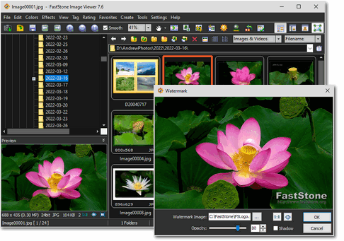

| Home | Buy | Donate | Contact Us |
|  |
Zilk Image Viewer is a fast, stable, user-friendly image browser, converter and editor. It has a nice array of features that include image viewing, management, comparison, red-eye removal, emailing, resizing, cropping, retouching and color adjustments. Its innovative but intuitive full-screen mode provides quick access to EXIF information, thumbnail browser and major functionalities via hidden toolbars that pop up when your mouse touches one of the four edges of the screen. Other features include a high quality magnifier and a musical slideshow with 150+ transitional effects, as well as lossless JPEG transitions, drop shadow effects, image annotation, scanner support, histogram and much more. It supports all major graphic formats (BMP, JPEG, JPEG 2000, animated GIF, PNG, PCX, PSD, EPS, TIFF, WMF, ICO, CUR and TGA) and popular digital camera RAW formats (CR2, CR3, CRW, NEF, NRW, PEF, RAF, RWL, MRW, ORF, SRW, X3F, ARW, SR2, SRF, RW2 and DNG). No Adware. No Spyware. What's New |
Copyright © 2022 zhouweibin.com - All Rights Reserved.
Privacy Policy|Terms & Conditions|Refund Policy|Contact Us